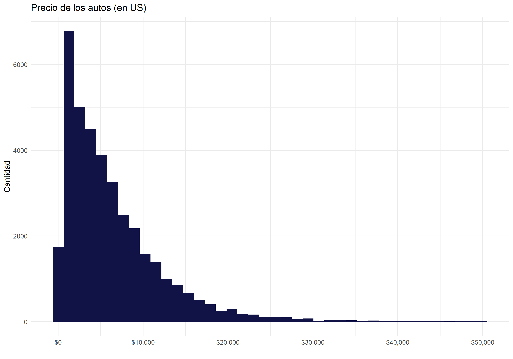
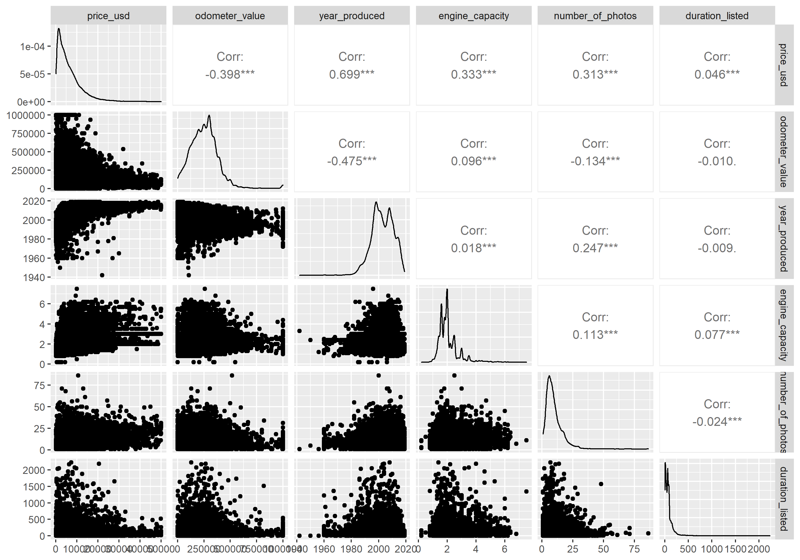

Introducción Proyecto
Descripción del tema
En este proyecto se intentará comprender cómo las características de un auto usado influyen en su precio. Para esto se tomaran en cuenta autos usados publicados en un famoso catálogo de Bielorrusia. Al comprender cómo se relacionan las distintas variables con el precio del auto se podrían armar modelos que sirvan para estimar el precio de un auto en especifico basado en su información.
Esto es útil tanto para personas que quieren vender o comprar un auto usado ya que se pueden hacer una idea del valor que tiene en el mercado un vehículo en específico y así hacer una buena compra o venta.
Datos
Los datos de los autos usados provienen de un catálogo de Bielorrusia y fueron tomados el 2 de Diciembre de 2019. La base contiene la información de 37.948 autos usados a la venta con 12 variables:
| variable | tipo | descripción |
|---|---|---|
manufacturer_name |
caracter | Marca |
model_name |
caracter | Modelo |
transmission |
caracter | Tipo de transmisión (automático o manual) |
color |
caracter | Color |
odometer_value |
numérica | Odómetro (en KM) |
year_produced |
numérica | Año de producción |
engine_type |
caracter | Tipo de motor (bencina o diesel) |
engine_capacity |
numérica | Capacidad del motor |
price_usd |
numérica | Precio (en USD) |
location_region |
caracter | Región en donde se vende el auto |
number_of_photos |
numérica | Número de fotos en el catálogo |
duration_listed |
numérica | Número de días en el catálogo |
Análisis exploratorio

Vemos que el precio de venta para la mayoría de los autos está entre los 2000 y los 7000 USD.

Existen algunos autos a la venta que son muy viejos, es posible que se trate de outliers. Se analizará si es necesario quitar estos valores para obtener un mejor modelo.
Además observamos que la mayoría de los vehículos fueron fabricados alredor del 2000.
Ahora veremos un conjunto de gráficos para comprender como se relacionan algunas variables entre si y si existe correlación entre ellas.

Notamos gran correlación entre el precio del auto y el año en que fue fabricado, tiene sentido suponer que para autos más nuevos el precio será mayor. Nuevamente se ven observaciones que podrían ser outliers (vemos un auto fabricado en 1940 con alto precio). Además por lo que se ve en el gráfico se podría pensar que a medida aumenta el kilometraje de un auto su precio dismuye.
Pasos a seguir
Se crearan distintos modelos de regresión para comprender que variables afectan en el precio del vehículo y de que manera lo hacen. A priori podemos pensar que el año del auto y el kilometraje (valor del odómetro) tienen gran influencia. También se ananlizará si algunas carcateristicas del anuncio como la cantidad de fotos o el sector influyen en el precio.